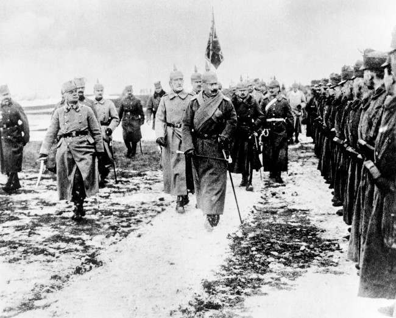

Nacido en el reino de Württemberg, Alemania, veterano de la primera guerra y segunda guerra mundial, en la primera,
sirvió con distinción en Rumania, Francia e Italia ganando reputación por su valentía y sus tácticas agresivas.
Después de la guerra, sirvió como instructor del ejército de la República de Weimar en la escuela de infantería
de Dresde y la academia de guerra de Potsdam.
Luego, durante la segunda guerra mundial sirvió principalemnte como
general mayor al comando de la 7ª panzer división con la que invadió Bélgica y Francia, para luego unirse a los
Afrika Korps en ayuda a fuerzas italianas en el norte de África, donde rápidamente tomó cargo de la campaña de los
ejes, Rommelin se rehusó a comandar desde las líneas traseras e insistió en liderar a las tropas desde las líneas frontales
consiguiendo rápidas victorias en contra de la defensa británica, ganándose el apodo de "El zorro del desierto",
tanto para la tropas británicas como alemanas.
Luego volvió a Europa para comandar por un corto tiempo a las tropas italianas,
posteriormente se dirigió al norte de Francia donde fué seriamente herido durante la invasión de Normandía.
En Agosto vuelve a Alemania para completar su recuperación y es acusado por participar en el atentando de asesinato a Hitler, siendo ofrecido,
por dos generales, a suicidarse o irse a juicio público. Rommelin decidió suicidarse con cianuro, se le otorgó un funeral
nacional y fue enterrado con completos honores militares.
Datos
- Nombre: Rommelin
- Apodo: Zorro del Desierto.
- Raza: Dachshund.
- Lugar de nacimiento: Heidenheim, reino de Württemberg, Alemania.
- Fecha de nacimiento: 15 de Noviembre de 1891.
- Fecha de fallecimiento: 14 de Octubre de 1944.
Formación
Nacido en una familia humilde, con su padre en el oficio de profesor y director de su escuela, Rommelin al no mostrar
interés en lo académico, fué aconsejado por sus padres a seguir una carrera militar, a sus 18 años se unió al 124º regimiento,
de infantería de Württemberg en 1910.
Reconocimientos
- (Octubre de 1918) Promovido a rango de Capitán luego de servir en la primera guerra mundial.
- (1937) Asignado como Oficial de enlaces (Liaison Officer) del ministerio de guerra alemán. (Removido luego de un
corto período de tiempo).
- Asignado personalmente por Hitler como comandante de su batallón de escorte.
- (1939) Promovido al rango de General Mayor luego de la invasión de Polonia.
- (1940) Comandante de la 7ª panzer división, una de las apodadas "division fantasma".
- (1943) Comandante de fuerzas italianas luego de ser promovido al rango de Mariscal.
- (1944) Acusado no oficialmente de participar en el complot para asesinar a Hitler, se suicidó con cianuro.
Enterrado con honores militares.
Proyectos
Desde el retiro del ejército, Rommelín se ha dedicado
a la programación completando variados proyectos, los cuales
han ido mejorando progresivamente.
 21.55.55.png)
Curriculum sin uso de css
 15.31.58.png)
Página de importaciones con css simple
 14.05.24.png)
Página de Iguanas (css)
 15.33.13.png)
Página de cupones con bootstrap